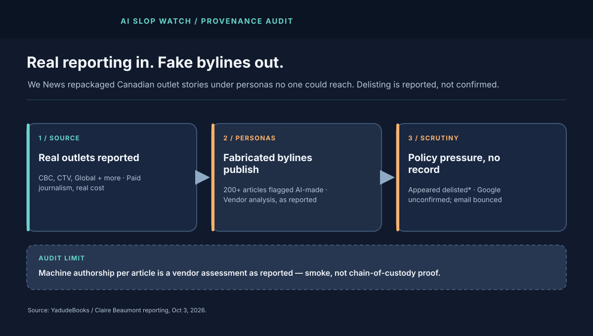
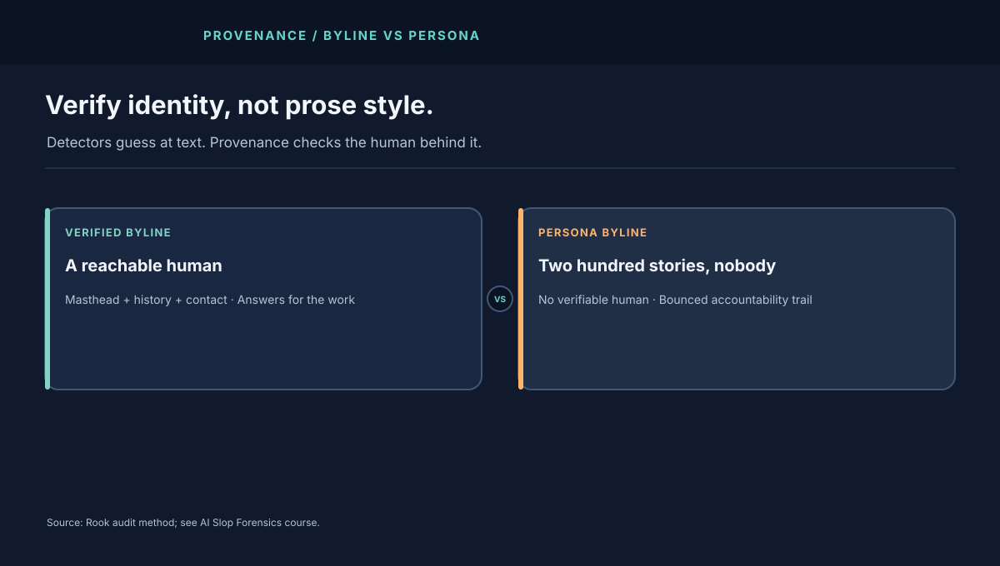

1. The Newsroom Where Nobody Worked
The report's core is simple and damning. A site called We News published rewritten versions of stories from at least six legitimate Canadian news operations under bylines that do not trace to verifiable humans — "Geneviève Tremblay" as the workhorse, "Gordon Halloway" as editor-in-chief. The Canadian Press tried to reach a human behind the site; the listed contact email bounced. The site says it is based in Hong Kong.
Scale is what separates this from ordinary plagiarism. Just over 200 articles attributed to a single persona were analyzed — industrial output no lone copyist sustains. Whether every one was machine-drafted matters less than the pipeline it implies: ingest real reporting, rewrite at machine speed, publish under synthetic authority, monetize the resulting traffic.
2. What "Flagged as AI" Actually Proves
Originality.ai CEO Jon Gillham is quoted saying his company analyzed the 200+ Tremblay articles and identified them as AI-generated, and warning that industrial-scale slop sites risk degrading trust in news. Treat that finding with the discipline it deserves: a vendor detection result, reported secondhand, without published methodology, false-positive rates, or per-article scores in the public record.
Detectors estimate statistical likelihood; they do not establish who pressed publish, which model drafted what, or whether a human edited the output. The stronger evidence in this case never needed a detector: unverifiable bylines, rewrite-level similarity to outlet stories, bounced accountability contacts, and volume no human newsroom of that footprint produces. Provenance beats prose forensics.
3. The Money and the Law
Follow the incentive and the enforcement gap opens. Academics quoted in the report describe the model plainly: repackage real journalists' work, monetize the traffic, externalize every cost onto the outlets that paid for the reporting. One researcher adds that social platforms amplifying such sites share blame. News Media Canada's president notes the copyright paradox — the content is covered, but suing is slow, expensive, and jurisdictionally tangled, especially against an entity claiming a Hong Kong base.
The policy responses are statements, not actions. Canada's AI minister's office said Canadians deserve to know when content is AI-generated or altered and pointed to a finished transparency consultation plus creator concerns over consent, compensation, and attribution. Google, asked about delisting, gave policy language — low-value scaled content violates search and News rules; 99% of search visits stay spam-free — without confirming anything about We News specifically. A parallel US operation, Brown Brothers Media, is reported to have stopped publishing and been delisted or downranked — "or" doing heavy lifting there too.
The late-September "Daniel Robson" episode sharpens the frame. Outlets pulled work attributed to a possibly-nonexistent contributor; an editor's refusal-of-video-call test plus old-fashioned phone verification exposed it; the apparent motive was attacking dissidents rather than ad revenue. Deception is the constant. AI is sometimes the instrument, sometimes the alibi.

4. The Forensics Checklist: Personas, Provenance, Platform
Audit synthetic newsrooms the way the book-slop audit says to audit synthetic books — through identity, catalog, and resolution evidence:
- Verify the byline like an identity. Reverse-image portraits, employment history, social graph, video presence, outlet mastheads. A reporter with 200 stories and no verifiable human is a persona until proven otherwise.
- Match against the source catalog. Near-simultaneous rewrites of the same six outlets' stories, same facts in shuffled order, same quotes with light paraphrase — that is a scraping signature, not a beat.
- Test accountability reachability. Working newsrooms answer. Bounced emails, form-only contacts, and offshore shells with no named human are resolution risk signals.
- Separate platform action from platform language. "Appears delisted" plus a generic policy quote is not a takedown record. Demand per-site disposition: demoted, delisted, or untouched — with dates.
- Price the harm to the source. Track diverted traffic, ad-revenue leakage, and reader confusion per repackaged story. Takedown without compensation leaves the business model intact.
This pairs naturally with the Amazon book-slop audit — same provenance hole (unverifiable contributor, borrowed authority, removal without attribution), different shelf. The method that catches both is taught in AI Slop Forensics: verify identity, compare catalogs, preserve evidence, publish dispositions.
5. Field Glossary: Eight Terms This Audit Teaches
Slop forensics starts with shared definitions. Eight terms, each tied to the reported case:
| Term | What it means here | Why it mattered on Oct 3 |
|---|---|---|
| Synthetic persona | A byline with no verifiable human behind it. | "Tremblay" and "Halloway" carried hundreds of stories; no human answered for them. |
| Repackaging | Rewriting others' reporting closely enough to harvest its value. | The alleged pipeline: ingest six outlets, rewrite, publish, monetize. |
| AI detection finding | A statistical judgment that text resembles machine output. | Originality.ai's 200-article flag — smoke worth reporting, not proof of authorship. |
| Provenance | The documented chain of who made what from which sources. | Missing at every link: unknown writers, undisclosed sources, bounced contacts. |
| Delisting vs downranking | Removal from search results vs demotion within them. | The report says "appeared delisted"; the Brown Brothers parallel hedges with "or downranked." |
| Accountability reachability | Whether a publisher can be contacted and answered. | Bounced email plus offshore shell equals no one to question or serve. |
| Transparency consultation | Government process on AI-content disclosure rules. | Ottawa points to a finished consultation; creators await obligations with teeth. |
| Trust externality | Harm to shared credibility that the polluter never pays for. | Real outlets pay in reader trust for confusion a persona farm created. |
6. Auditor Playbook: How to Verify a Persona Operation Yourself
Rook's five-step method, usable on any "AI newsroom" claim:
- Interrogate the byline first. Search the name beyond the suspect site: mastheads, employment history, social graph, image provenance, video presence. A 200-story reporter with no footprint outside one domain is a persona until proven otherwise.
- Map the source catalog. Line up suspect stories against outlet output by timestamp and fact sequence. Same facts, same quotes, shuffled order, near-simultaneous publication — that is a scraping signature, and screenshots with timestamps are your evidence.
- Test reachability and record it. Email the listed contact, log bounces, archive the contact page. Unreachability is itself a finding; publish the attempt, not just the failure.
- Grade detector claims as vendor signals. Ask for methodology, sample size, per-article scores, and false-positive rates. "Flagged by" without those is a lead, and leads get corroboration before they get headlines.
- Separate platform language from platform action. Query the site's actual search visibility over days; never convert a generic policy quote into a confirmed takedown. Record demotion, delisting, or nothing — with dates.
Apply the same playbook to the next persona farm, book-slop ring, or review-mill story. The inventory changes; the verification does not. The AI Slop Forensics course drills each step with worked cases.
Appendix A. Worked Comparison: Book Slop vs News Slop, Same Machine
Set this audit beside its companion — the Amazon book-slop audit — and the pipeline rhymes line for line. Different shelves, one machine.
| Stage | Book slop (Cam Wilson case) | News slop (We News case) |
|---|---|---|
| Source material | A real author's real book | Six real outlets' real reporting |
| Borrowed authority | Lookalike title + unverifiable byline | Rewritten stories + fabricated personas |
| Scale signal | Template family across many authors | 200+ articles under one persona |
| Accountability trail | Seller unidentified; rule undisclosed | Contact email bounced; action unconfirmed |
| Platform response | Listing removed after direct report | Apparent delisting, Google unconfirmed |
| What remains | Suspected copies still for sale | Method reusable anywhere tomorrow |
Three lessons survive the comparison. First, removal is not resolution in either market: the listing comes down, the template family persists, the persona farm rehosts. Report the reappearance rate alongside the takedown or the metric is theater. Second, the victim's burden is inverted in both: Wilson had to buy his own copycat; outlets must discover their own rewrites. Systems that make victims do the detection have outsourced moderation to the harmed. Third, the evidentiary standard that works is identical — identity, catalog similarity, reachability, disposition records — which means one provenance stack defends books, news, music, and reviews alike. Build it once; aim it everywhere. The AI Slop Forensics course is that stack taught as method.
Appendix B. Objections, Answered
"Aggregation and rewriting is normal journalism." Real aggregation cites sources, names its authors, answers for errors, and adds reporting. Persona republication does none of the four. The difference is not rewriting — it is accountability. A masthead that cannot be reached is not a newsroom.
"Detectors said AI, case closed." Detectors open cases; they do not close them. A vendor flag without methodology, scores, or false-positive rates is a lead awaiting corroboration — which this case has in volume: unverifiable bylines, rewrite-level similarity, bounced contacts. Lead with provenance; cite detection as supporting signal, never as verdict.
"Delisting solves it." Even confirmed delisting solves one domain, not the method. Templates rehost, personas rename, and the next farm learns from the takedown. Platform action without published disposition records and without compensation to source outlets leaves the business model profitable. Watch what Google publishes, not just what disappears.
"Regulation can't keep up with cheap models." True for content bans; beside the point for provenance law. Identity verification for publishers, catalog-similarity duties for platforms, and reachable-accountability requirements do not need to detect AI at all — they need to verify humans. Regulate the business, not the model weights.
Appendix C. Deep Dive: The Money Trail — How Persona Farms Monetize
No revenue figures are public for We News, and this audit invents none. The following is a conceptual model of how persona-republication operations may monetize; it is not a verified description of We News's revenue process. It shows possible chokepoints and where compensation could be considered.
Step 1: harvest attention wholesale. Rewritten stories target search queries and social feeds where the original outlets compete. The farm spends nothing on reporting — no salaries, no bureaus, no libel review — so every visitor monetizes at near-100% margin. The outlet that paid for the journalism earns nothing from the farm's copy of its work. Cost asymmetry is the entire business: real news has a cost floor; rewrites do not.
Step 2: launder traffic through legitimate rails. Programmatic ad exchanges, social distribution, and search results treat the farm as one more publisher. Each rail takes its cut and passes the rest through, which means each rail is also a chokepoint: ad-exchange quality policies, platform demonetization, and search spam actions each raise the farm's costs without any court involved. The reported Google scrutiny — confirmed or not — operates on this layer.
Step 3: rotate faster than enforcement. Domain registration can be inexpensive relative to investigation, attribution, and takedown work; exact costs vary, and this audit has no We News cost data. Rehosting under a new name with similar templates may take less effort than investigating the operator. This asymmetry is why a single-domain takedown does not establish whether the underlying operation stopped.
The white-hat response follows the money instead of the model. Advertiser-side: exchanges publishing placement transparency and exclusion lists starve farms at the revenue tap. Registrar-side: repeat-offender templates tied to payment identity, not just domain names, raise rotation costs. Outlet-side: catalog-similarity detection plus fast-lane reporting turns victim discovery from luck into process. And the missing piece everywhere: compensation for diverted value — traffic and revenue accounting that flows back to source outlets, because takedown without restitution leaves the theft profitable in expectation. Until the expected value turns negative, the personas will keep their bylines and change their domains.
Appendix D. The Reader's Lens: Spotting Persona Operations in the Wild
Audits catch farms after the fact; readers meet them mid-scroll. Five checks any reader can run in under two minutes, no tools required:
1. Click the byline's history. A real reporter's name returns a trail: prior outlets, beats, social presence, corrections, conference panels. A persona's name returns only the suspect site — dozens or hundreds of stories with no existence anywhere else. Volume without a past is the single strongest tell, and it needs no detector.
2. Compare the lede against the wire. Copy a distinctive sentence into a search engine. Persona rewrites track source stories fact-for-fact in near-identical order; legitimate competing coverage diverges in structure, sourcing, and emphasis. Same skeleton, shuffled adjectives: republication. Different skeleton: journalism.
3. Look for the masthead's humans. Real outlets publish mastheads, corrections policies, and contactable editors. Persona sites offer form-only contacts, grandiose titles with no verifiable holders, and offshore vagueness. Ask one question — "who answers for an error here?" — and watch how fast the answer dissolves.
4. Check the portrait and the cadence. Profile photos that reverse-search to stock libraries or other names, plus superhuman publishing cadences (a dozen deeply-reported stories a day from one "reporter"), each independently suggest fabrication. Together they approach certainty long before any AI verdict.
5. Follow the money cues. Pages saturated with programmatic ad slots, no subscription or membership path, no donor disclosure, and aggressive social distribution are monetization-first signals. Journalism that costs nothing to produce and exists only to harvest attention deserves exactly the skepticism its business model earns.
None of these checks mentions AI — deliberately. Persona detection that depends on spotting "AI style" breaks the moment the next model writes more naturally. Provenance checks depend only on the farm's structural needs: fake humans, borrowed facts, unreachable accountability, monetized attention. Those needs do not change with model versions, which is why this lens outlives every detector update. Teach it to one reader and the farm loses a customer; teach the method, as the AI Slop Forensics course does, and it loses the market. That is the compounding return no detector update can match: every reader who checks a byline before believing a story makes the next persona farm marginally less profitable. Farms optimize against detection; they cannot optimize against readers who simply ask who wrote this and accept no fiction as an answer.
7. The Verdict
The record supports a narrow claim: The Canadian Press reported that We News published Canadian stories under fabricated personas, a vendor analysis flagged its articles as AI-generated, and the site appeared delisted from Google. It does not establish which model wrote what, who profited how much, or whether Google took a specific action. Verifiable bylines, catalog-level similarity checks, reachable accountability contacts, and public disposition records are possible controls to evaluate; their effectiveness here has not been measured.
The news was real and the newsroom was not. What to watch next: whether Google ever particularizes action on We News beyond generic policy language, whether Ottawa's transparency consultation hardens into publisher-identity obligations with teeth, and whether the next persona farm you meet survives thirty seconds of Appendix D's reader checks. The rewrites will keep coming; the question is whether readers, platforms, and law start pricing provenance before the next two hundred stories publish.
The news was real. The newsroom was not.
Sources and Method
Persona names, outlet list, vendor finding, statements, parallels, and the bounced contact are attributed to The Canadian Press report republished by Global News on Oct 3, 2026. Google's non-confirmation is explicit in that report. Rook performed no independent detection, contact attempt, or traffic measurement.